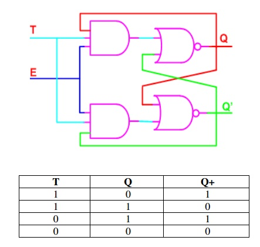
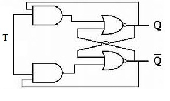
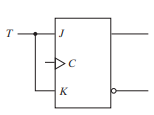
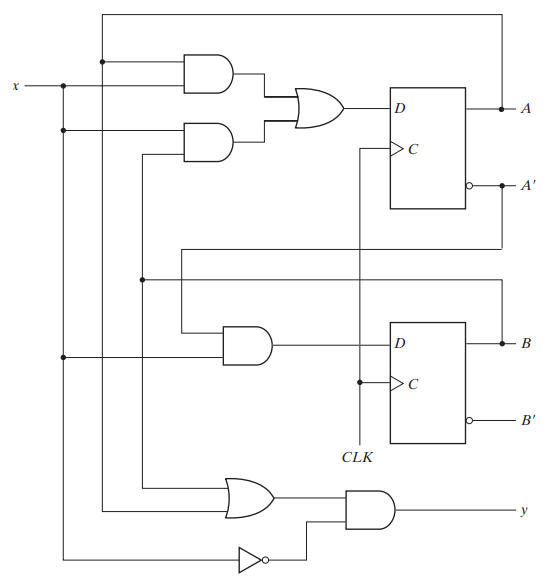
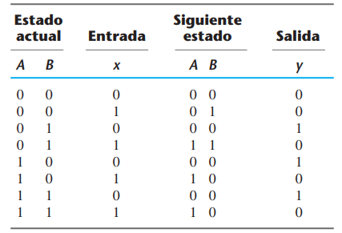
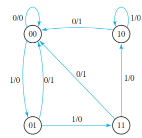
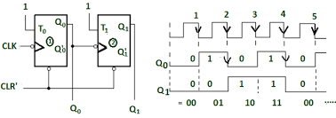
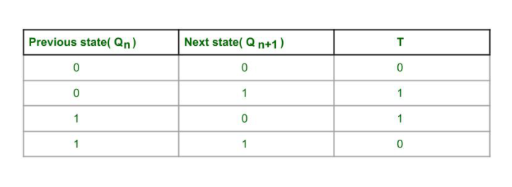

La ecuación característica de un flip-flop expresa algebraicamente su tabla característica: da el siguiente estado Q(t+1) en función de sus entradas y del estado actual Q. Es una propiedad del flip-flop, no del circuito en el que se usa.
| Flip-flop | Ecuación característica | Comportamiento |
|---|---|---|
| D | Q(t+1) = D | Copia D en el flanco de reloj |
| T | Q(t+1) = T ⊕ Q = T·Q' + T'·Q | T = 0 mantiene · T = 1 complementa |
| JK | Q(t+1) = J·Q' + K'·Q | 00 mantiene · 01 borra · 10 pone · 11 complementa |
| SR | Q(t+1) = S + R'·Q (con S·R = 0) | S pone · R borra · S = R = 1 prohibido |
| T | Q | Q(t+1) |
|---|---|---|
| 0 | 0 | 0 |
| 0 | 1 | 1 |
| 1 | 0 | 1 |
| 1 | 1 | 0 |
Q(t+1) vale 1 en las filas T'Q y TQ', por lo tanto:
Q(t+1) = T'·Q + T·Q' = T ⊕ Q
Con T = 0 el flip-flop conserva su estado; con T = 1 lo complementa en cada flanco: Q(t+1) = Q'.
El comportamiento de un circuito secuencial con reloj se describe algebraicamente con ecuaciones de estado (también llamadas ecuaciones de transición). Cada una especifica el siguiente estado de un flip-flop en función del estado actual y de las entradas del circuito.
Se obtienen en dos pasos:
Para el circuito de la siguiente diapositiva (dos flip-flops D, entrada x):
DA = A·x + B·x ⇒ A(t+1) = A·x + B·x
DB = A'·x ⇒ B(t+1) = A'·x
Con flip-flops D la ecuación de estado coincide con la ecuación de entrada porque Q(t+1) = D. Con flip-flops T o JK hay que hacer la sustitución, por ejemplo con TA = x: A(t+1) = x ⊕ A.




Como los flip-flops no comparten el mismo reloj, el circuito es asíncrono: el cambio de cada etapa dispara a la siguiente y se propaga "en rizo". En un contador sincrónico todos los flip-flops reciben CLK al mismo tiempo.
Con 2 flip-flops se tienen 22 = 4 estados (00, 01, 10, 11). La tabla de excitación indica qué valor debe tener T para producir cada transición Q(t) → Q(t+1):

T = Q(t) ⊕ Q(t+1)
Es decir, T = 1 solo cuando el estado debe cambiar. En este contador ambos flip-flops deben cambiar cada vez que se disparan, por eso T0 = T1 = 1; quien decide cuándo cambia Q1 es su reloj (Q0), no su entrada T.
Estado y transición en cada flanco de bajada de CLK:
| Estado actual Q1 Q0 | Estado siguiente Q1⁺ Q0⁺ | Q0 (reloj de FF1) | FF1 |
|---|---|---|---|
| 0 0 | 0 1 | 0 → 1 (subida) | mantiene |
| 0 1 | 1 0 | 1 → 0 (bajada) | complementa |
| 1 0 | 1 1 | 0 → 1 (subida) | mantiene |
| 1 1 | 0 0 | 1 → 0 (bajada) | complementa |
Diagrama de estados: 00 → 01 → 10 → 11 → 00 → … (cuenta ascendente módulo 4).
T0 = 1, reloj FF0 = CLK
T1 = 1, reloj FF1 = Q0
FF1 se complementa solo cuando Q0 cae de 1 a 0.
T0 = 1, reloj FF0 = CLK
T1 = Q0, reloj FF1 = CLK
Con reloj común, la condición "Q0 = 1 antes del flanco" se lleva a la entrada T1.
Sustituyendo T = 1 en la ecuación característica Q(t+1) = T ⊕ Q:
Q0(t+1) = 1 ⊕ Q0 = Q0'
FF1 se complementa únicamente cuando Q0 estaba en 1 antes del flanco de CLK, así que, observado al ritmo de CLK:
Q1(t+1) = Q1 ⊕ Q0
Las ecuaciones son las mismas que las del contador sincrónico, pero en el asíncrono Q1 cambia un retardo de propagación (tpd) después de Q0. En la transición 11 → 00 el contador pasa brevemente por 10 (11 → 10 → 00). Con n bits el retardo se acumula hasta n·tpd, lo que limita la frecuencia máxima y puede producir pulsos espurios en la lógica que decodifica la cuenta.